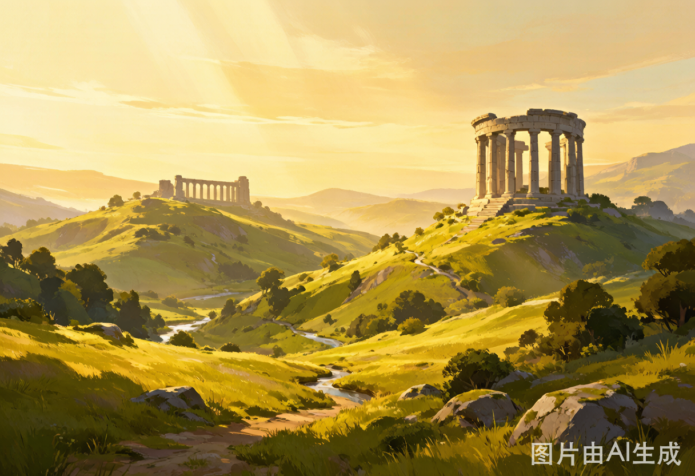

广告
Hyrule Map (original sketch)
Categories
Main StoryAll 120 Shrines
All MemoriesAll Koroks
Korok MapAll Gear
Guides
More →
Shrines
All 120 BOTW Shrines
Walkthrough
Divine Beast Order
Collectibles
Koroks by Region

Gear
Best Armor Sets
Mechanics
Buff Recipe Guide
Tips
Speedrun Basics
Collectibles
Korok Seeds 900 (中文)
Shrines
Keeta-Baji Shrines (中文)
广告